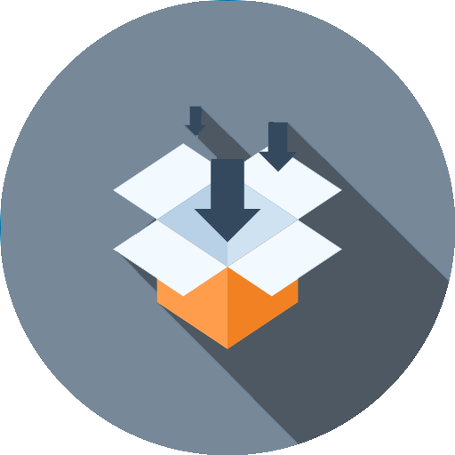

Центр обработки данных (ЦОД) - это комплексная централизованная система
Это большой комплекс IT решений и высокотехнологичного оборудования, гарантирующий заданный уровень надёжности, доступности и безопасности.
Основные услуги ЦОД

Colocation
(размещение оборудования)
Dedicated server
(предоставление серверов в аренду)
Shared
(аренда дискового пространства)
Telehousing
(размещение ИТ-инфраструктуры)

Dedicated area
(предоставление выделенных зон)
Дополнительные услуги ЦОД
Хостинг обслуживания и администрирования ПО
Хостинг инфраструктурных услуг
Аутсорсинг информационных систем
Мониторинг
EMEA-Европа, ближний восток и Африка
APAC-Азиатско-Тихоокеанский регион
Americas – Северная и Южная Америка
Основные международные игроки рынка ЦОД
Крупнейшие игроки Americas
Equinix
Digital Realty
CoreSite
Equinix
Interxion
Telehouse
Equinix
NextDC
Global Switch
Российские игроки рынка ЦОД
| Крупнейшие поставщики услуг ЦОД |
Количество введенных в эксплуатацию стойко-мест |
Совокупная площадь серверных залов, кв. м. |
Совокупная подведенная мощность ко всем ЦОД, мВт |
Количество ЦОД на территории РФ |
| 1. | DataLine | DataLine – 4 207 | Ростелеком – 12 500 | Ростелеком - 35 | Ростелеком - 22 |
| 2. | Ростелеком | Ростелеком – 4 100 | DataLine – 7 669 | DataLine - 30,6 | DataLine - 7 |
| 3. | Linxdatacenter | Linxdatacenter – 2 040 | Selectel – 6 700 | DataPro – 20 | Selectel - 6 |
| 4. | Selectel | Selectel – 1 610 | Xelent (SDN) – 6 500 | Linxdatacenter - 17 | Крок - 3 |
| 5. | Stack Group | Stack Group – 1 400 | Сервионика (ГК «АйТеко») – 6 000 | Selectel - 11,4 | Linxdatacenter - 2 |
| 6. | DataPro | DataPro – 1 350 | DataSpace – 3 000 | Крок – 11 | Stack Group - 2 |
| 7. | Сервионика (ГК«АйТеко») | Сервионика (ГК «АйТеко») – 1 200 | Крок – 3 000 | DataSpace - 9,5 | DataPro -1 |
| 8. | DataSpace | DataSpace – 1 152 | Stack Group – 2 800 | Xelent (SDN) - 9,3 | Сервионик а (ГК «АйТеко») - 1 9 |
| 9. | Xelent (SDN) | Xelent (SDN) – 1 074 | Linxdatacenter – 2 186 | Stack Group - 8,7 | DataSpace - 1 |
| 10. | Крок | Крок – 1 000 | DataPro – 1 360 | Сервионика (ГК «АйТеко») - 8 | Xelent (SDN) - 1 |
Российские игроки облачного рынка
Крупнейшие поставщики IaaS в России в 2017 году
Крупнейшие поставщики SaaS в России в 2017 году
| Название компании |
Выручка от оказания услуг SaaS в 2016 г., включая НДС |
Доля выручки SaaS в совокупной выручке компании |
| 1. | СКБ Контур | 8 600 000 | н/д |
| 2. | Softline | 1 797 140 | 3% |
| 3. | Манго Телеком | 1 688 484 | 100% |
| 4. | B2B-Center | 1 364 641 | 100% |
| 5. | Корус Консалтинг СНГ | 1 056 597 | 99% |
| 6. | Ай-Теко | 676 950 | 5% |
| 7. | МойСклад | 600 000 | н/д |
| Название компании |
Выручка от оказания услуг IaaS в 2016 г., включая НДС |
Доля выручки IaaS в совокупной выручке компании |
| 1. | ИТ-Град | 1 157 280 | 76% |
| 2. | DataLine | 1 095 000 | 22% |
| 3. | Крок | 957 356 | 3.4% |
| 4. | Softline | 751 660 | 1.3% |
| 5. | Ай-Теко | 723 645 | н/д |
| 6. | Техносерв | 563 755 | н/д |
| 7. | OnCloud.ru | 516 000 | 35% |
Международные лидеры на облачном рынке: AWS, GCP, Microsoft Azure
Microsoft Azure
 Интеграция (как текущая, так и будущая) с другими продуктами и услугами Microsoft
Возможности Microsoft Azure становятся все более инновационными и открытыми, а программное обеспечение Microsoft Azure Stack от Microsoft может потенциально привлечь клиентов, ищущих гибридные решения.
Огромный объем продаж и неуклонный раст по клиентов Azure; многие из них начинают тратить более $500 тыс. в год, а растущее число превышает ежегодные расходы в размере 5 миллионов долларов. В настоящее время Microsoft Azure занимает 11% рынка.
Интеграция (как текущая, так и будущая) с другими продуктами и услугами Microsoft
Возможности Microsoft Azure становятся все более инновационными и открытыми, а программное обеспечение Microsoft Azure Stack от Microsoft может потенциально привлечь клиентов, ищущих гибридные решения.
Огромный объем продаж и неуклонный раст по клиентов Azure; многие из них начинают тратить более $500 тыс. в год, а растущее число превышает ежегодные расходы в размере 5 миллионов долларов. В настоящее время Microsoft Azure занимает 11% рынка.
Аналитика
Базы данных
ИИ + машинное обучение
Интеграция
Интернет вещи
Мобильные приложения
Мультимедиа
Разработка и операции
Средства для разработчиков
Средства управления
Хранилище
География Microsoft Azure
Amazon Web Services (AWS)
 AWS является доминирующим лидером на рынке и лидером в области ИТаналитики уже более 10 лет, причем не только в рамках IaaS, но и в рамках, интегрированных IaaS+PaaS, а уровень доходности на конец 2017 года составляет более 20 миллиардов долларов.
AWS является поставщиком, который чаще всего выбирают для стратегического внедрения; многие корпоративные клиенты тратят ежегодно более 5 миллионов долларов.
AWS обладает самой широкой экосистемой поставщика облачных услуг IaaS, которая гарантирует клиентам возможность получения поддержки и лицензий для большинства коммерческих программ, а также программного обеспечения и решений SaaS, которые предварительно интегрированы с AWS.
AWS является доминирующим лидером на рынке и лидером в области ИТаналитики уже более 10 лет, причем не только в рамках IaaS, но и в рамках, интегрированных IaaS+PaaS, а уровень доходности на конец 2017 года составляет более 20 миллиардов долларов.
AWS является поставщиком, который чаще всего выбирают для стратегического внедрения; многие корпоративные клиенты тратят ежегодно более 5 миллионов долларов.
AWS обладает самой широкой экосистемой поставщика облачных услуг IaaS, которая гарантирует клиентам возможность получения поддержки и лицензий для большинства коммерческих программ, а также программного обеспечения и решений SaaS, которые предварительно интегрированы с AWS.
Продукты Amazon Web Services (AWS)
Облачные вычисления
Хранилище в облаке
Сетевая конфигурация и доставка контента
Инструменты для разработчиков
Машинное обучение
Аналитика
Мобильные сервисы
Интеграция приложений
Эффективность бизнеса
Интернет вещей
Программное обеспечение
Потоковая передача рабочего стола и приложений
Дополненная и виртуальная реальность
География Amazon Web Services (AWS)
Google Cloud Platform (GCP)
 Google позиционирует себя как" открытого " поставщика, с акцентом на переносимость, которая сосредоточена на экосистемах с открытым исходным кодом.
Компания GCP обладает хорошо реализованным, надежным и эффективным ядром фундаментальных возможностей IaaS и PaaS, включая растущее число уникальных и инновационных возможностей.
Google потенциально может помочь клиентам в процессе трансформации операций с помощью своей инженерной программы надежности клиентов .
Google позиционирует себя как" открытого " поставщика, с акцентом на переносимость, которая сосредоточена на экосистемах с открытым исходным кодом.
Компания GCP обладает хорошо реализованным, надежным и эффективным ядром фундаментальных возможностей IaaS и PaaS, включая растущее число уникальных и инновационных возможностей.
Google потенциально может помочь клиентам в процессе трансформации операций с помощью своей инженерной программы надежности клиентов .
Продукты Google Cloud Platform (GCP)
Вычисление
Хранение
Сеть
Большие данные
Машинное обучение
Средства управления
Инструменты для разработчиков
Личные данные и безопасность
Аналитика
Мониторинг
География Google Cloud Platform (GCP)
Сравнение облачных лидеров: AWS vs Azure vs GCP
| Вендор |
Сильные стороны |
Слабые стороны |
| AWS |
Лидирующая позиция на рынке
Обширные, зрелые предложения
Поддержка крупных организаций
Обширные тренинги
Глобальный охват |
Сложность использования
Управление затратами |
| Azure |
Второй крупнейший провайдер
Интеграция с инструментами Microsoft И ПО
Широкий набор функций
Гибридное облако
Поддержка открытого исходного кода |
Менее «enterprise-ready»
Неполная система управления |
| GCP |
Предназначен для облачных предприятий
Приверженность открытому исходному коду
Глубокие скидки и гибкие контракты
Экспертиза DevOps |
Поздний участник рынка IaaS
Меньше возможностей и услуг
Меньше мировых ЦОДов |
Сравнение ценовой политики на облачные услуги
AWS: пути формирования ценовой политики Amazon особенно неисповедимы. В то время как он предлагает калькулятор затрат, множество переменных, связанных с этим, затрудняют получение точных оценок.
Azure: Из-за сложных вариантов лицензирования программного обеспечения и использования секретных скидок, его структура ценообразования может быть еще труднее понять без внешней помощи.
GCP: напротив, Google использует свою ценовую качестве точки дифференциации. Он стремится предложить "удобные для клиента" цены, которые превосходят цены списка других поставщиков.
Анализ расхода на содержание ЦОДа
Барьеры и перспективы российского рынка ЦОД
Развитию российского рынка мешает множество факторов, например:
Поздний старт по сравнению с иностранными конкурентами. Рынок услуг дата-центров в России начал формироваться в 2000 году и до сих пор находится на стадии становления.
Отсутствие четкой градации услуг.
Медленное развитие в связи с экономическими факторами.
Перспективы для развития российского рынка :
Экспоненциальный рост объема данных и развитие технологий BigData
Развитие программ в области безопасности и видеонаблюдения («Безопасный город» и др.)
Государственная политика и рост требований регуляторов по хранению данных (СОРМ, перс. данные, «пакет Яровой» и пр.)
Развитие ИТ-проектов государства (Национальная платежная система, Электронное правительство)
Развитие модели ИТ-аутсорсинга и рост спроса на облачные сервисы